Jacksonville Flavors: Mastering the DIY Grill and Boil
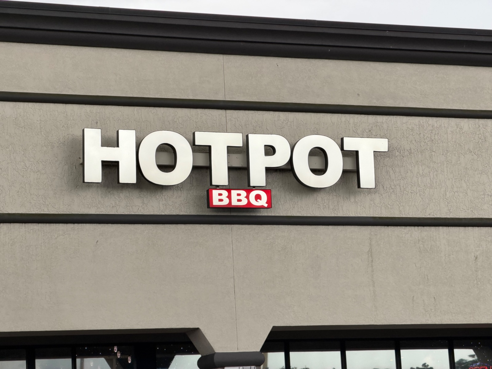
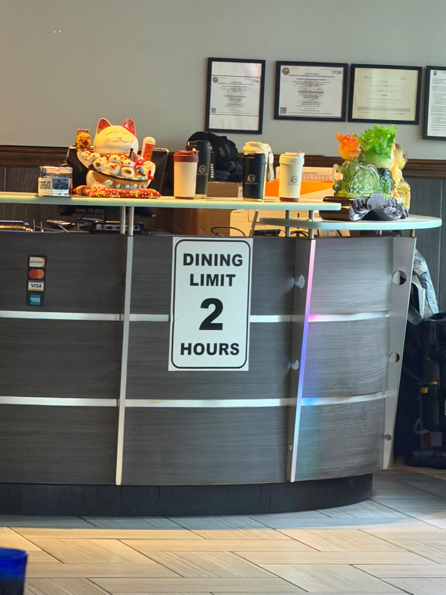
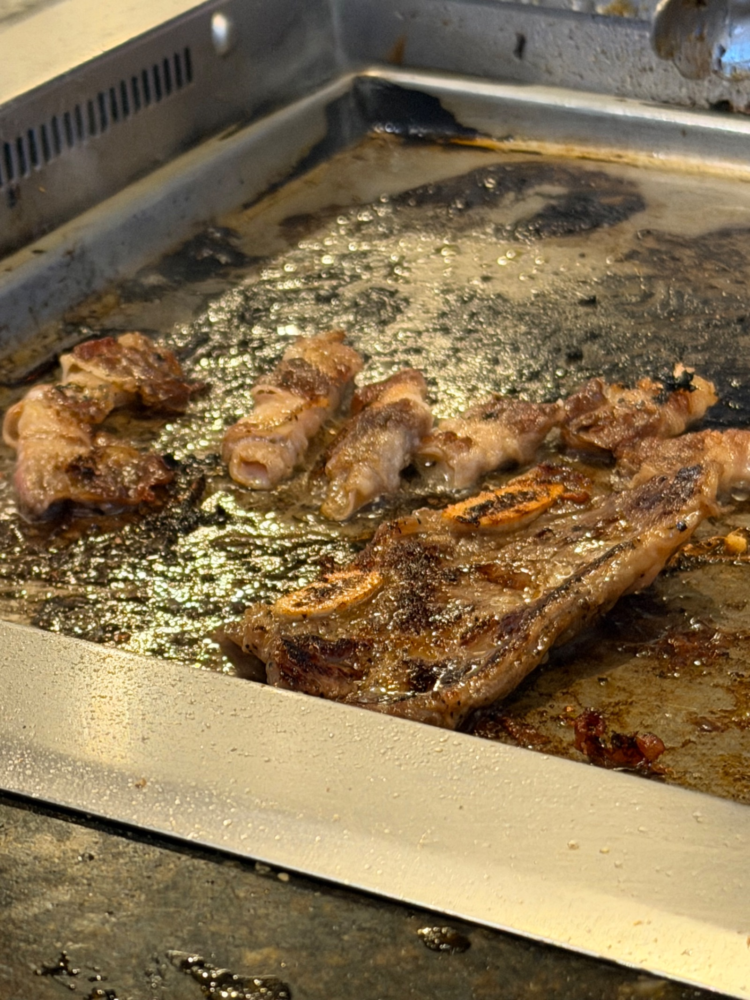
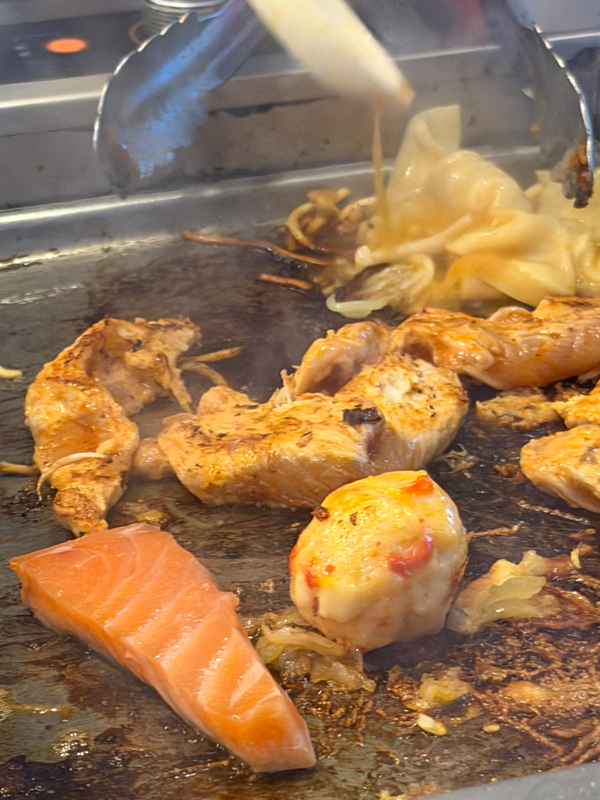
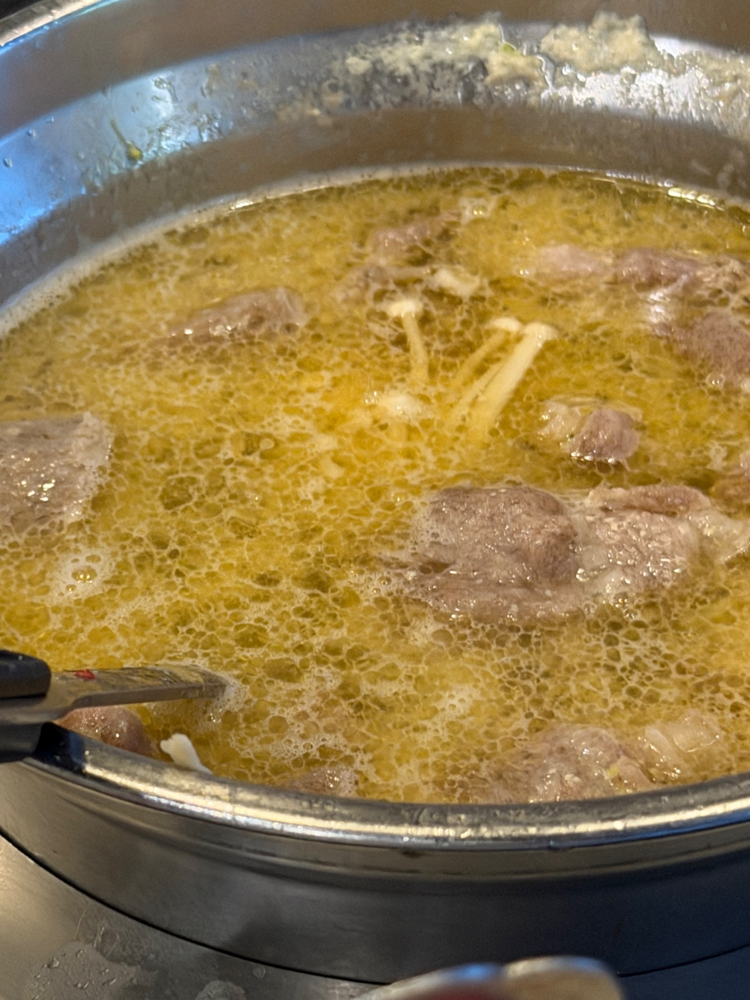
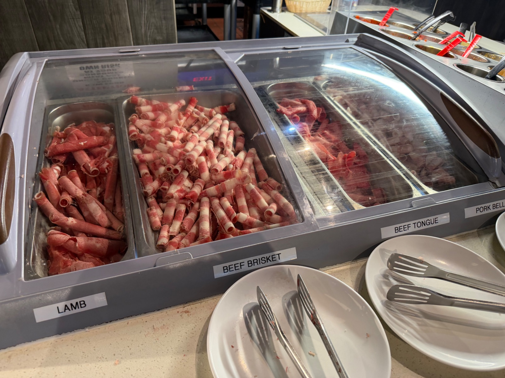
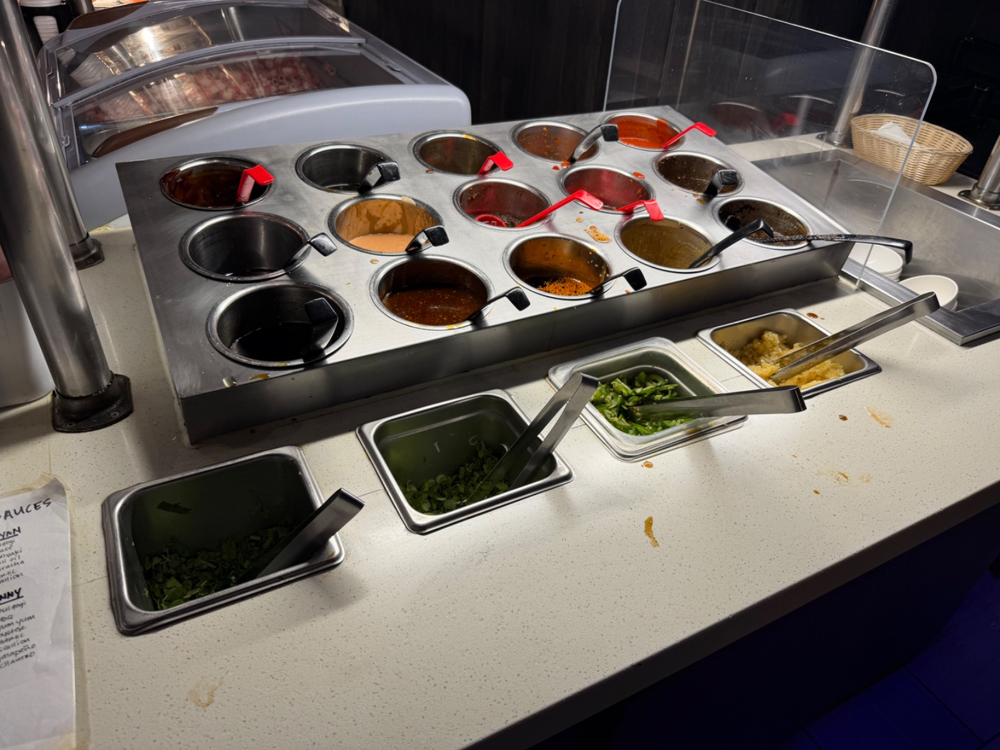
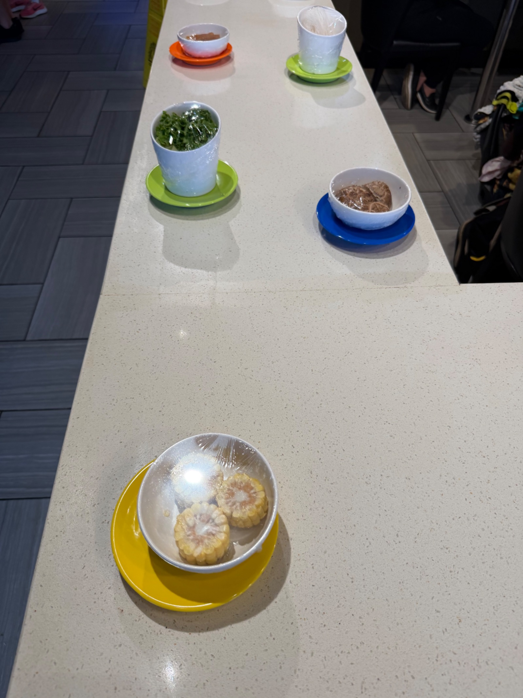
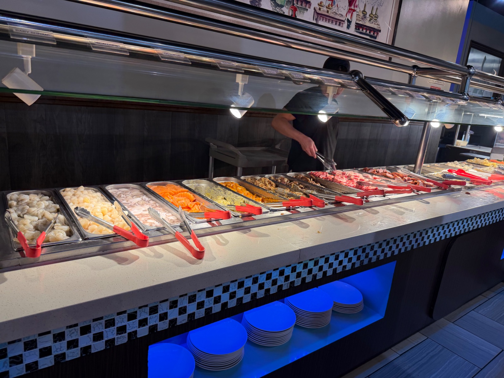
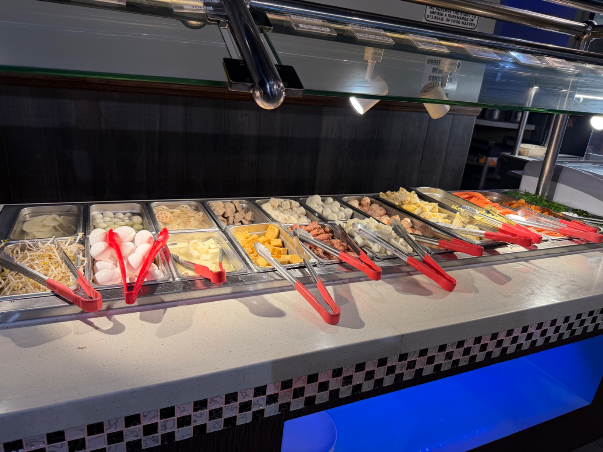
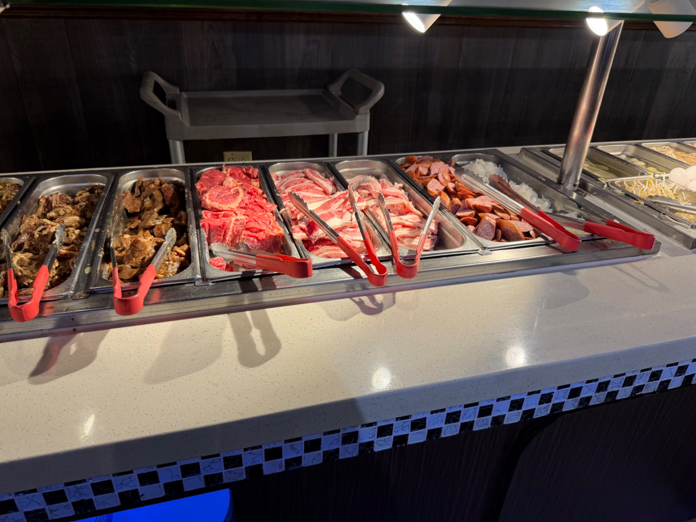
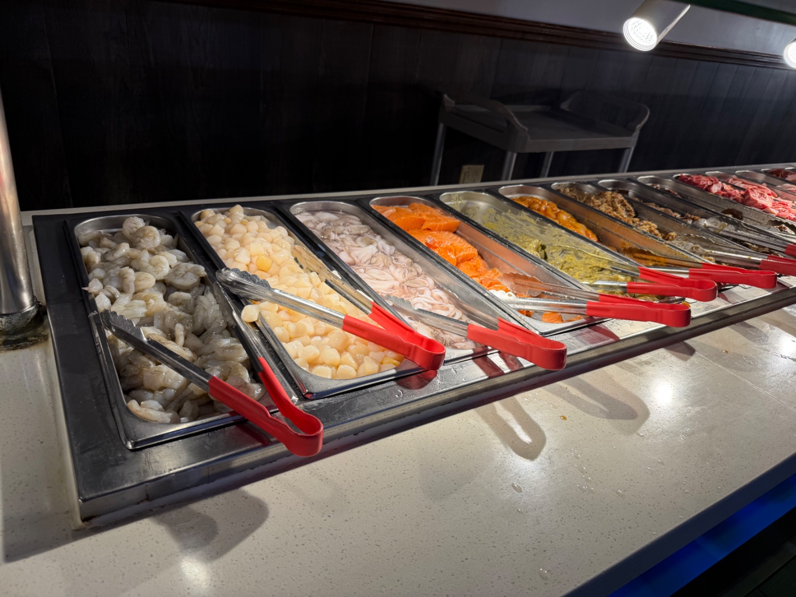
Watch on YouTube →
As we inch closer to our move to Japan, the preparation process has been all-consuming. While I recently wrote about using hot pot as a way to mentally transition into this new chapter, today I’m focusing on the sheer fun of the culinary experience itself.
There is something unique about stepping away from the packing boxes and into a restaurant where you are fully in charge of the cooking process. It’s a complete break from the logistical to-do lists that have dominated our lives in Jacksonville lately.
More Than Just a Meal
When you visit a spot that offers both Korean BBQ and hot pot, you aren't just sitting down to be served; you are actively participating in the creation of your dinner. It’s an interactive challenge that turns a standard meal into an engaging activity.
For the grill, the focus is all about patience and precision. Getting that perfect sear on short ribs or watching thinly sliced meats transform on a tabletop grill requires just enough attention to keep you focused on the present moment, rather than the upcoming relocation tasks.
Similarly, the hot pot side of the table offers a different kind of reward. It’s not just about the final taste; it’s about managing the balance of the broth. Watching the heat, timing the addition of various fresh ingredients, and curating your own bowls—from seafood like baby shrimp and scallops to various meats and mushrooms—is a satisfying way to spend an evening.
A Communal Reset
Beyond the DIY aspect, these meals provide a great venue for stepping back and enjoying time together. Whether it’s a quick family outing or catching up with friends, the bustling environment of these restaurants is a welcome change of pace from our current home routine.
If you find yourself needing a break from the daily grind or just want to test your skills as a tabletop chef, heading out for a hot pot and Korean BBQ night is a fantastic way to recharge. It turns dinner into an event, and in these busy times, that kind of experience is exactly what we need.
What are your favorite interactive dining spots in the area, and do you have any tips for mastering the grill or the perfect broth? Let me know in the comments!